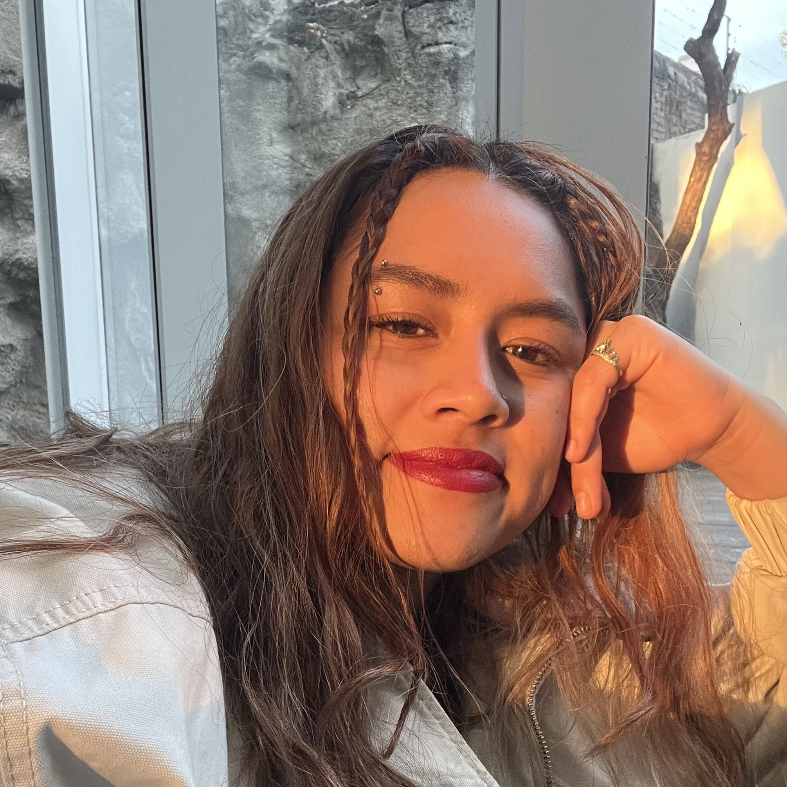
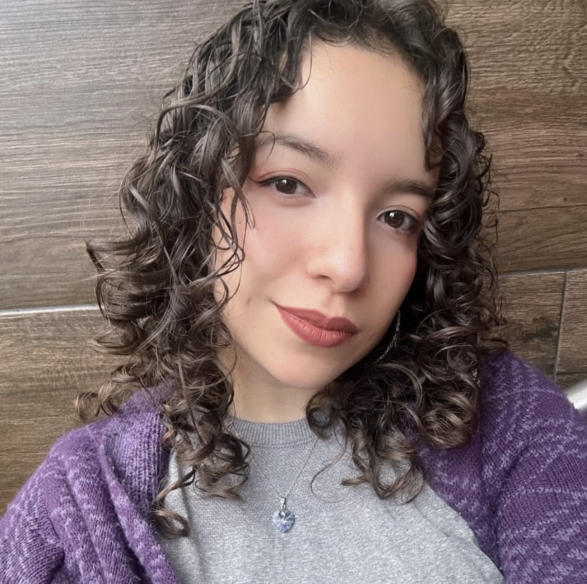

Miembros del Grupo de Investigación
Alexandra Rosselli González Balderrama
- Estudiando psicología, actualmente estoy trabajando como ingeniera en monitoreo de redes empresariales en Totalplay.

Arely Perez Ramirez
- Profesora dedicada a la Enseñanza de Idiomas (Inglés y Francés) a niños, adolescentes y adultos. Apasionada por la Educación Consciente, la Psicolingüística y las Neurociencias.
- Actualmente, además de mi labor docente, formo parte del equipo de investigación dirigido por el Dr. Armando Angulo Chavira en el Laboratorio de Psicolingüística de la Facultad de Psicología de la UNAM como parte de mi servicio social.
